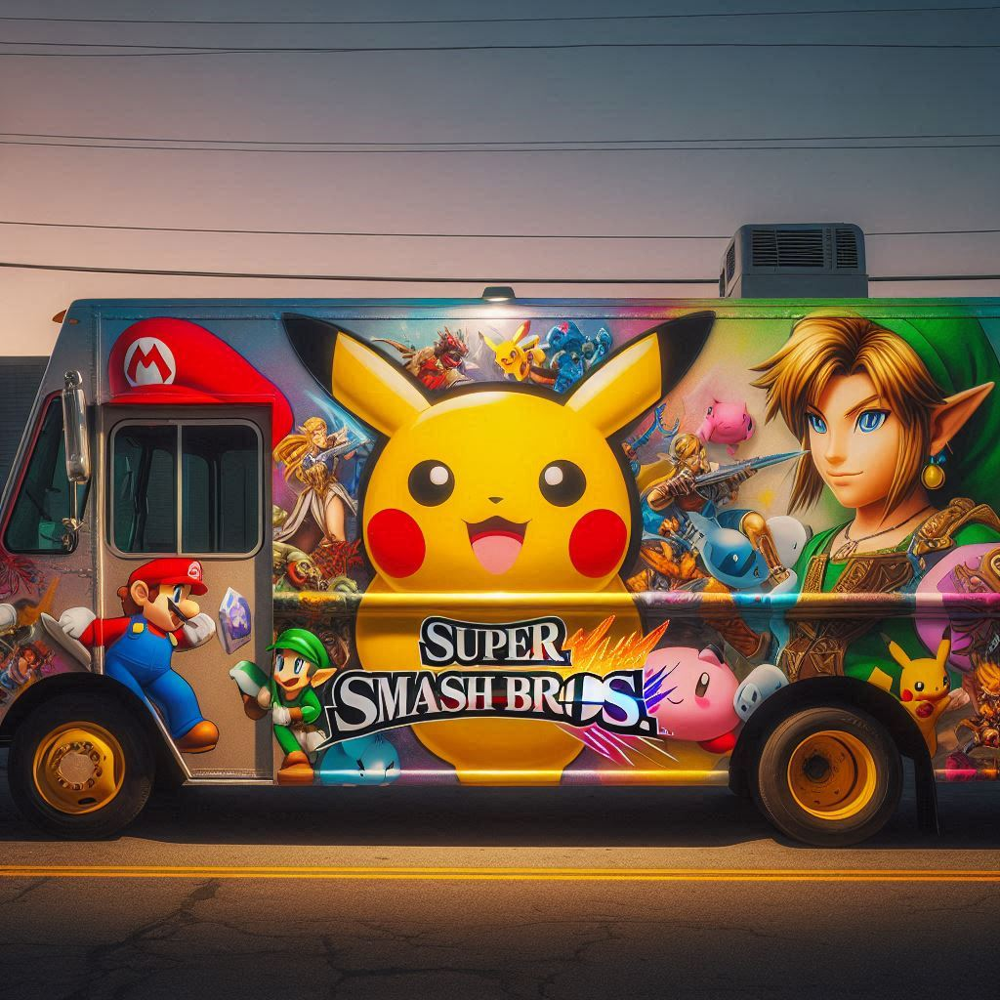

Welcome to the Smash Truck website young smasher!
Come join us to taste excellent
several dishes on the theme of the best games of all time !


find us right here
Monday : 11h00-15h00
Tuesday : 11h00-15h00
Wednesday : 11h00-14h30
Thursday : 11h00-15h00
Friday :11h00-15h00
e-mail adress : SmashTruck76@gmail.com
phone : 06 12 13 14 15
Since my childhood, I have been a big fan of the video game Super Smash Bros.
I have also always loved cooking, especially burgers and tacos.
I have wanted to have a food truck, but I didn’t know what to do,
because I wanted to create something special that only I would cook.
One day, while playing Super Smash Bros., I had an idea:
why not create a food truck inspired by this video game?
So, I have worked for months to develop several recipes
that represent Super Smash Bros.
That is how I have created Smash Truck.
Every product we use has come from a farm and is of good quality and healthy,
and our food is affordable to help students.